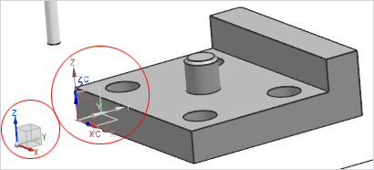
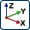
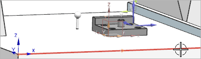
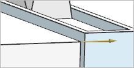
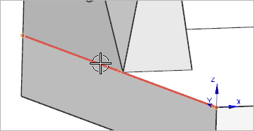
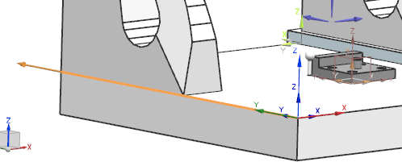
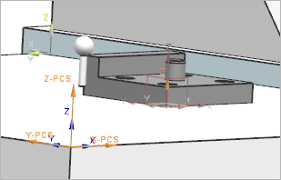

Set the PCS to the MCS
When you implement an alignment strategy on an actual machine, you must first bridge the implied Part Coordinate System (PCS) to a Machine Coordinate System (MCS).
The MCS 0,0,0 origin can lie wherever the programmer prefers but must consist of three mutually orthogonal axes of motion. For the purpose of this tutorial, the PCS can be said to initially lie on the same location as the Work Coordinate System (WCS).
For more information on coordinate systems common to CMMs, see Understanding coordinate systems.
In this activity, you will define an MCS. The PCS will then be set to your defined MCS.
-
If the WCS for the part being inspected is not already visible, choose Format→WCS→Display.
In the graphics window, note that the directions of the View Triad and WCS are analogous. The View Triad essentially represents the application’s absolute coordinate system, while the WCS represents the work part’s coordinate system.

-
On the Insert toolbar, click Alignment .
-
In the Alignment dialog box, in the Machine Coordinate System group, click CSYS Dialog .
-
In the CSYS dialog box, in the Type group, select X-axis, Y-axis.
-
In the X-axis group, ensure that Specify Vector is selected, and then click to the right of the midpoint of the CMM table’s front edge.

In the CSYS dialog box, the X-axis is now defined. Because you clicked to the right of the table edge, the vector also points to the right, along positive X.

-
In the Y-axis group, ensure that Specify Vector is selected, and then click toward the back of the CMM table’s left edge.

In the CSYS dialog box, the Y-axis is now defined. The vector points to +Y. The Z axis is inferred and your MCS is analogous to the WCS.

-
Click OK.
-
In the Alignment dialog box, in the PCS Name box, type MCS_000.
Although you are defining an MCS, the movement to the MCS location affects the PCS, so you must give it an MCS name. This name represents the nominal MCS location (X=0, Y=0, and Z=0).
-
In the Operation Name box, type DEFINE_MCS, and click OK.
-
In the Inspection Navigator, expand the PART_ALIGNMENT program group and then select DEFINE_MCS.

PART_ALIGNMENT

DEFINE_MCS
In the graphics window, the axes of the MCS are now mutually parallel with the axes of the WCS and the movement of the CMM.

-
Save your inspection setup file.
The MCS is now defined. You are ready to begin your part alignment.